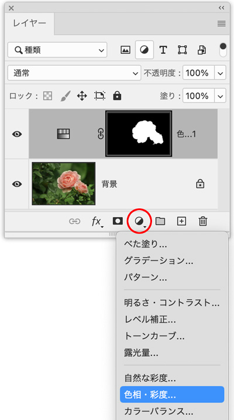
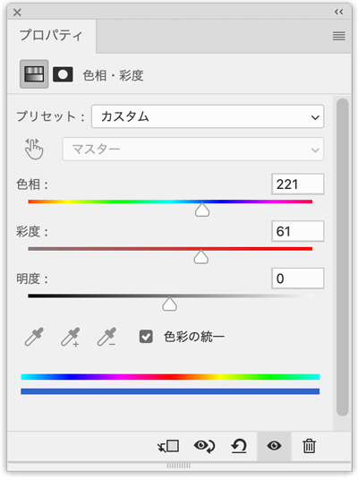
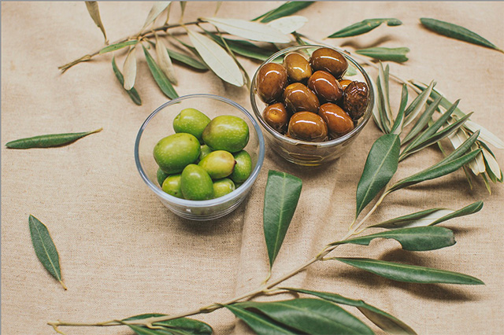
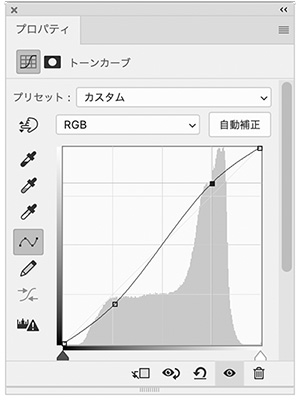

選択範囲の色を変更（色相・彩度）
pixabay.com
- 「オブジェクト選択ツール」→ オプションバー「被写体を選択」
新規調整レイヤー「色相・彩度」

- 「色彩の統一」にチェック
- 「色相」の値を「221」にする
- 「彩度」の値を「61」にする

完成
トーンカーブ
- 画像の色調の範囲全体に配置されたポイントを補正する
- 画像の色調は、最初は直線の対角線としてグラフに表示される

- 右上の領域はハイライトを表し、左下の領域はシャドウを表す
- 「S」字を描くように、ハイライトとシャドウを微調整する
